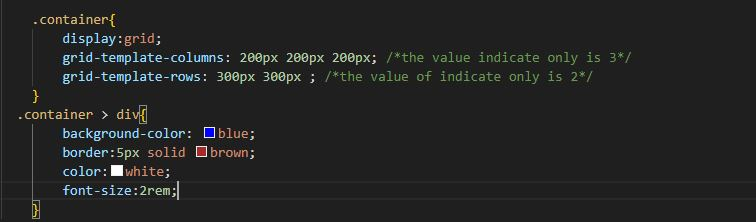
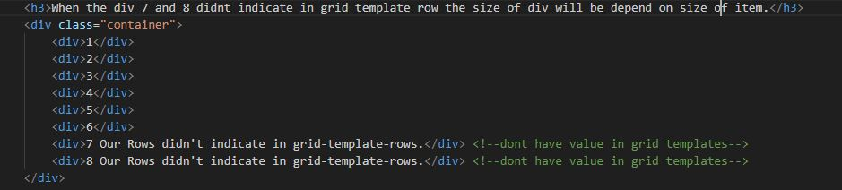
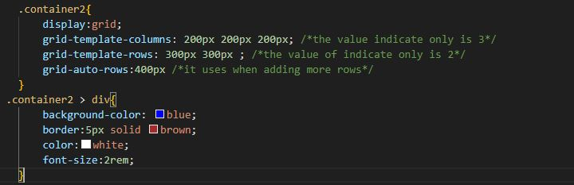

Grid-Auto-Rows
It use when the div is no value in Grid-template-colums and grid-template-rows
CSS Code without grid-auto-rows:

HTML Code:

Output:
When the div 7 and 8 didnt indicate in grid template row the size of div will be depend on size of item.
1
2
3
4
5
6
7 Our Rows didn't indicate in grid-template-rows.
8 Our Rows didn't indicate in grid-template-rows.
CSS Code with grid-auto-rows:

Output:
When the div 7 and 8 didnt indicate in grid template row but it uses grid-auto-rows
1
2
3
4
5
6
7 Our Rows didn't indicate in grid-template-rows. Uses grid-auto-rows.
8 Our Rows didn't indicate in grid-template-rows. Uses grid-auto-rows.